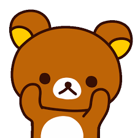

好想睡覺
拉拉熊是一個非常可愛又慵懶的角色，最喜歡的事情就是放鬆、睡覺和吃好吃的東西。 很多人都很喜歡拉拉熊悠閒的生活態度。
拉拉熊的朋友們
-
小白熊（Korilakkuma）
小白熊是突然出現在大家身邊的白色小熊，名字中的「Ko」有小的意思。個性比較調皮，常常捉弄拉拉熊。
-
懶懶熊（Rilakkuma）

懶懶熊是整個系列的主角，名字來自日文「Relax」，代表放鬆悠閒的生活方式。
-
小雞（Kiiroitori）
小雞是負責打掃和管理生活的角色，個性認真又愛乾淨，常常提醒拉拉熊不要太懶惰。